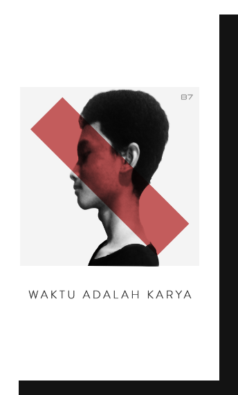

BIMA SATRIA
210411100085 / UNIVERSITAS TRUNOJOYO MADURA
Hai, saya Bima Satria Erlangga biasa dipanggil Satria pada tahun 2003 bulan April tanggal 9 saya muncul di dunia ini. Saat ini saya sedang menempuh pendidikan di Universitas Trunojoyo Madura prodi Teknik Informatika dan sudah menyelesaikan 3 semester. Kesibukan lain yang saya gunakan untuk mengisi waktu luang antara lain menggambar, menulis novel dengan partner kuliah, develop game bersama dengan team saya, kemudian di kampus saya juga mengajar praktikum.